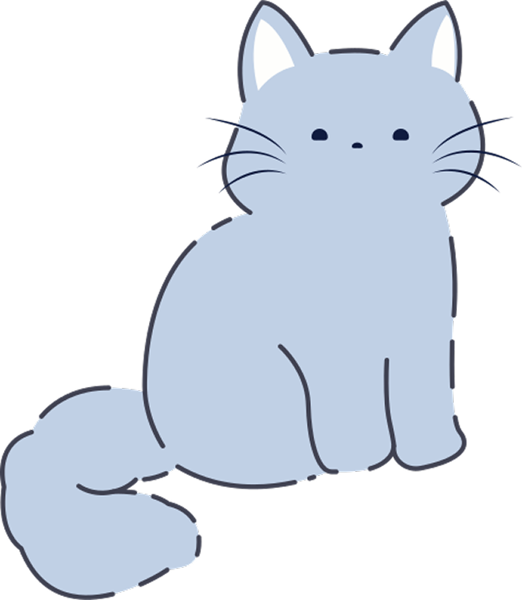

마지막으로 하늘을 보았던 때는 언제인가요? 바쁜 일상 속, 단 3분만 나를 만나는 시간. 질문으로 성찰하고 나만의 펫과 교감하며 마음을 돌보세요.
마음의 신호
바쁜 일상 속에서 우리는 정서적 고립감을 느끼곤 합니다.
청소년과 현대인에게 우울증은 이제 일상적인 존재가 되었지만, 방치된 마음은 깊은 상처로 이어집니다.
대한민국 자살률 (OECD 국가 중)
스트레스를 경험하는 청소년 빈도 (자주/가끔)
해결책
"자기 성찰적인 질문에 답하는 과정은 감정 조절과 자아 정체성 확립에 매우 효과적입니다."
바쁜 하루에서 잠시 브레이크를 밟고, 온전히 스스로에 대해 고민해 볼 수 있는 따뜻한 여백을 선물합니다.
혼자만의 기록은 지치기 쉽기에 펫 상호작용을 더했습니다. 당신의 답변을 먹고 자라며 성취감과 안정감을 줍니다.
주요 기능
하루에 한 번, 마음에 가볍게 노크를 하는 질문 일기장이 열립니다. 부담 없는 질문부터 심도 깊은 성찰까지, 나를 알아가는 대화를 시작해 보세요.
질문에 답할수록 나의 반려 펫이 함께 자라납니다. 미션을 통해 얻은 음식과 가구로 상점에서 방을 꾸미고 상호작용하며 심리적 교감을 느껴보세요.

텍스트 뒤에 숨겨진 감정의 변화를 객관적으로 확인하세요. 기록의 가치를 시각화하여 지속 가능한 마인드 케어와 자기 객관화를 돕습니다.
미리보기
Q. 마지막으로 하늘을 보았던 때는 언제인가요?
🐾 당신의 성찰로 소중한 친구가 한 걸음 더 자라났습니다!
설문조사 데이터
"평소에 우울함이나 스트레스를 자주 느껴요."
"나만의 감정을 온전히 정리하고 기록할 온화한 공간이 절실히 필요합니다."
"서비스가 출시된다면 실제 사용하여 내 마음을 돌보고 싶습니다."
요금제
프리미엄 체험
FAQ
젤리처럼 말랑하고 부담 없는 기록(Log)을 통해 사용자가 자신의 감정을 편안하게 마주할 수 있기를 바라는 마음을 담았습니다.
네. 사용자가 작성한 일기와 감정 데이터는 안전하게 암호화되어 저장되며, 서비스 개선 및 AI 분석 외의 목적으로 사용되지 않습니다. 사용자는 언제든지 자신의 기록을 확인하거나 삭제할 수 있습니다.
평균 3분 정도면 충분합니다. 부담 없이 답할 수 있는 질문들로 구성되어 있어 바쁜 일상 속에서도 가볍게 자기 성찰을 이어갈 수 있습니다.
기본적으로 하루에 한 번 새로운 질문이 제공됩니다. 알림 설정을 통해 원하는 시간에 질문을 받아볼 수도 있습니다.
아닙니다. AI 리포트는 사용자의 감정 흐름과 기록을 분석하여 시각화해 주는 참고 자료입니다. 전문적인 심리 상담이나 의료적 진단을 대체하지 않습니다.
물론입니다. 자기 돌봄은 경쟁이 아닌 여정입니다. 하루를 놓쳤다고 해서 불이익이 생기지 않으며, 언제든 다시 이어서 기록할 수 있습니다.
기본적으로 모든 기록은 비공개입니다. 다만 사용자가 원할 경우 특정 기록을 이미지 형태로 저장하거나 공유할 수 있는 기능을 제공할 예정입니다.
아니요. 펫은 사용자를 압박하는 존재가 아닌 응원하는 동반자입니다. 기록을 쉬더라도 사라지지 않으며 언제든 다시 교감할 수 있습니다.
걱정하지 마세요. 질문 건너뛰기 기능과 새로운 질문 받기 기능을 통해 자신에게 맞는 속도로 성찰을 이어갈 수 있습니다.
사용자가 작성한 텍스트에서 감정 표현, 문맥, 긍정·부정 정서 변화 등을 종합적으로 분석하여 리포트를 생성합니다. 개인을 평가하거나 판단하기 위한 목적은 아닙니다.
네. 기본적인 질문 작성, 펫 성장, 월간 감정 리포트는 무료 플랜에서도 이용할 수 있습니다. 프리미엄은 더욱 깊이 있는 분석과 꾸미기 요소를 원하는 사용자를 위한 선택 사항입니다.
하나의 계정으로 로그인하면 스마트폰, 태블릿 등 여러 기기에서 동일한 기록을 확인할 수 있습니다.
지금 내 안의 작은 동반자 펫을 만나 나를 찾는 여정을 시작해보세요.